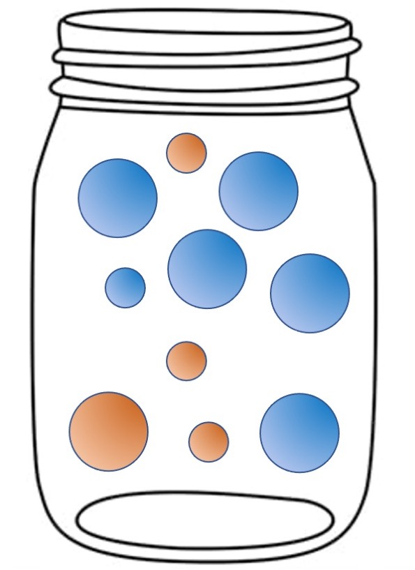

Probability
So far…
- Variables and data collection
- Research methods (validity)
- Descriptive statistics
Today…
- Something totally different
In research, we wish to make inferences about the unknown state of the world based on known data we have in hand.
We often accomplish this by determining how rare or unusual our data are under alternative models. On that basis we might reject some models as implausible. We might even be able to state how confident we are in that conclusion. This is statistical inference.
The language of how rare or unusual (or common or typical) the data might be is the language of probability.
Sara’s bag ’o treats
Some terminology
An elementary event is a member of the mutually exclusive and exhaustive outcomes that can happen when we make an observation.
For a coin toss, there are two elementary events.
For rolling a die, there are six elementary events.
For drawing tiles out of a Scrabble bag, there are 27 elementary events.
Define simple experiment – well defined act or process leading to simple outcome
The sample space is the set of all possible elementary events.
Absent additional information, we assume that what happens from outcome to outcome, as we observe events in the sample space, is random.
For that reason, the variable we define to represent the outcome of events in a sample space is called a random variable.
More terminology
A non-elementary event is composed of two or more elementary events.
For rolling a die, even numbers are a non-elementary event composed of tosses resulting in 2, 4, or 6.
For drawing tiles out of a Scrabble bag, vowels are non-elementary events composed of drawing the tiles A, E, I, O, and U.
The sample space can be divided into non-elementary events in multiple ways.
- Scrabble tiles can be categorized as vowels and consonants (or both), but also according to their point values.
More terminology
Each elementary event (and non-elementary event) has a probability and the sum of these probabilities is 1.
- This Law of Total Probability is another way of saying that the sample space is exhaustive—all possible events are included and the probability that one of them will occur for a given observation is 1.
The display of the elementary events and their probabilities is called a probability distribution.
For coin tosses and die rolls, this distribution is discrete and uniform.
For Scrabble tile draws, this distribution is discrete and non-uniform.
Other distributions we will encounter are continuous.
Code
#frequencies copied from scrabble.hasbro.com
letters = c("A-9", "B-2", "C-2", "D-4", "E-12", "F-2", "G-3", "H-2", "I-9", "J-1", "K-1", "L-4", "M-2", "N-6", "O-8", "P-2", "Q-1", "R-6", "S-4", "T-6", "U-4", "V-2", "W-2", "X-1", "Y-2", "Z-1", "Blanks-2")
data.frame(letters) %>%
separate(letters, into = c("letters", "freq")) %>%
mutate(freq = as.numeric(freq),
prob = freq/sum(freq)) %>%
ggplot(aes(x = letters, y = prob)) +
geom_bar(stat = "identity") +
scale_x_discrete("Tile Draw Result") +
scale_y_continuous("Probability") +
theme(axis.text.x = element_text(angle = 45))Probability distributions have parameters that define the nature of the distribution.
- These may be as simple as a single probability (die roll outcomes) or include additional information to describe, for example, variability (e.g., normal distribution).
Once we know the parameters, we know everything we need to construct the sample space and the probability distribution.
- We know what to expect in the data as we encounter outcomes in the sample space.
Rules of probabilities
\[ \text{not A} = P(\neg A) = 1-P(A)\]
Simple experiment: draw a marble from this jar.
What is the probability of drawing a blue marble?
- p(blue) = .6
What is the probability of not drawing a blue marble?
- p(not blue) = 1-p(blue) = 1-.6 = .4

Rules of probabilities
\[ P(A|B)\]
Simple experiment: draw a marble from this jar.
What is the probability of drawing a blue marble given that I drew a small marble?
- p(blue|small) = 1/4 = .25
Rules of probabilities
\[ \text{A and B}= P (A \cap B) = P(A|B)P(B)\]
Simple experiment: draw a marble from this jar.
What is the probability of drawing a blue and small marble?
- \[\begin{aligned} & p(blue \cap small) \\ = & p(blue|small)p(small) \\ = & (1/4)(4/10) = .1 \end{aligned}\]
Rules of probabilities
\[ \text{A or B} = P(A \cup B) = P(A) + P(B) - P(A \cap B)\]
Simple experiment: draw a marble from this jar.
What is the probability of drawing a blue or small marble?
- \[\begin{aligned} & p(blue \cup small) \\ = &p(blue) + p(small) - p(blue|small)p(small) \\ = & .6 + .4 - .1 = .9 \\ \end{aligned}\]
If the outcomes are mutually exclusive, then:
\[\large \text{A or B} = P(A \cup B) = P(A) + P(B)\]
If the outcomes are independent (a common assumption), then:
\[\large \text{A and B }= P (A \cap B) = P(A)P(B)\]
Can outcomes be both mutually exclusive and independent?
Independence example
Simple experiment: draw a card from a standard 52 card deck.
A is drawing a red card.
B is drawing a king.
Are A and B independent?
Another example:
A is drawing a red card.
B is drawing a heart.
Are A and B independent?
There are two fundamental ways to think about probability: the frequentist view and the Bayesian view.
The more common frequentist view is sometimes called the “in the long run” view. It defines probability as what is expected to happen in the long run, if the event in question (e.g., tossing a coin, rolling a die) is repeated over and over.
We know that a fair coin will come up heads 50% of the time: \(P(H) = .5\).
- A coin flipped a couple of times might come up heads both times, but a head flipped 1000 times would not likely come up heads 1000 times. In the long run, the proportion of heads will converge on the expected probability.
This “long run” view of probability means that in “short run” the outcomes will not behave as expected—the outcomes will show variability around the expected probability outcome. We can simulate what happens for a probability model in the short run. In many cases this behavior can be known mathematically.
The utility here is that we know what the truth is and can see how closely we approximate it in the long run, but also see what happens in realistic short run circumstances:
Tossing a coin: proportion of heads, P(H) = .5
Rolling a die: proportion of sixes, P(6) = .1666
Selecting a Scrabble tile: proportion of Zs, P(Z)=.01
Simulation here will confirm what we know must be true given the defined model, but will also give a sense of how far off the mark short-run results can be. This is valuable because we never have an infinite series of events; rarely do we have very long ones. We live in a short-run world and need to know how that affects inferences that we want to make.
set.seed(101421) # set seed so each time I run the code, I get the same numbers
nsim = 2000 # how many simulations
X = matrix(NA, ncol = 4, nrow = nsim) # an empty object to store the matrix
for(S in 1:nsim){
X[S,1] = S # which roll/sim
X[S,2] = rbinom(n = 1, size = 1, prob = .5) # flip a coin
X[S,3] = rbinom(n = 1, size = 1, prob = 1/6) # roll the die
X[S,4] = rbinom(n = 1, size = 1, prob = .01) # grab a tile
}
X = as.data.frame(X)
names(X) = c("num", "coin", "die", "scrabble") #name the columns
head(X) #first few rows num coin die scrabble
1 1 1 0 0
2 2 0 0 0
3 3 0 0 0
4 4 0 1 0
5 5 0 0 0
6 6 0 0 0X %>% ggplot(aes(x = num, y = coin)) + geom_line() + geom_hline(aes(yintercept = .5), color = "red", linetype = 2) + scale_x_continuous("Number of tosses") + scale_y_continuous("Proportion of heads", breaks = seq(0, 1, .1), limits = c(0,1)) + ggtitle("Proportion of heads as a\nfunction of number of tosses")+ theme_gray(base_size = 20) 
X %>% ggplot(aes(x = num, y = die)) + geom_line() + geom_hline(aes(yintercept = 1/6), color = "red", linetype = 2) + scale_x_continuous("Number of rolls") + scale_y_continuous("Proportion of sixes", breaks = seq(0, 1, .1), limits = c(0,1)) + ggtitle("Proportion of sixes as a\nfunction of number of rolls")+ theme_gray(base_size = 20) X %>% ggplot(aes(x = num, y = scrabble)) + geom_line() + geom_hline(aes(yintercept = .01), color = "red", linetype = 2) + scale_x_continuous("Number of draws") + scale_y_continuous("Proportion of Z tiles", breaks = seq(0, 1, .1), limits = c(0,1)) + ggtitle("Proportion of Z tiles as a\nfunction of number of draws") + theme_gray(base_size = 20) Notably, the examples plotted show one possibility of what may happen in a given experiment with repeated trials. But as statisticians, we have to contend with all possible outcomes…
Code
plot = expand_grid(N = 1:30, toss = 1:2000, prob = .5) %>%
mutate(coin = map_dbl(prob, ~rbinom(n = 1, size = 1, prob = .))) %>%
group_by(N) %>%
mutate(coin = cumsum(coin)/row_number())
plot = plot %>%
ggplot(aes(x=toss, y=coin, frame=N)) +
geom_line() +
transition_manual(N)
anim_save(here("lectures/images", "repeated_trials.gif"), plot)The frequentist view is popular because it is objective. The events in question are observable and the definition of probability (proportion of an event in the long run) is calculated in the same way by everyone.
On the other hand, in real life, “the long run” may not have a simple or realistic meaning:
“The probability that Sara is wearing sneakers today is .7, or 70%.”
At one level, we all have an intuitive feel for what this means and understand it to tell us that Sara is probably wearing sneakers.
But, in the strict sense, that statement doesn’t have a sensible meaning in the language of a frequentist view.
Sara either is or is not wearing sneakers (there are only two outcomes in the sample space); it makes no sense to say that Sara is wearing sneakers 70% right now and the event is not repeatable (today only happens once) in the strict sense, so the “long run” doesn’t seem to apply.
Instead, we have to say something like, on days like today (which can be repeated), the probability that Sara is wearing sneakers is .7.
Probability and statistics involve many such convenient fictions. What are the implications?
The link between probability and statistics is clear when we make the move to inference—the major task in science.
In probability, the model (the probability distribution, the generating function) is known and informs us what will be true about the data.
In statistical inference, the model is not known and we let the data inform us about the plausibility of different models that might be true.
We have to make assumptions about those models in order to sensibly answer the inference question.
If this coin is fair (proposed model), I expect the proportion of heads to be .5 in the long run.
After a long run (data collection), I find the proportion of heads to be .75. I reject the “fair coin model.” I could be wrong but will try to limit the mistakes.
This is statistical inference. It relies upon assuming some generating process for the events (a model), typically defined by a theoretical probability distribution (here the binomial). That framework allows us know the likelihood that we are wrong in our inference, especially in the short run.
Probability and probability distributions provide a frame of reference for making inferences.
Example: Which model?
Three competing models are available to explain the occurrence of a target event.
- Model A: \(p(E) = .70\)
- Model B: \(p(E) = .75\)
- Model C: \(p(E) = .40\)
I assume that this target event follows a binomial probability distribution. If that model is correct, at what point can I distinguish the models and declare a winner?
Code
set.seed(101719)
test_models = function(num_data){
TO = matrix(NA, ncol = 3, nrow = num_data)
for(S in 1:num_data){
TO[S,1] = S
TO[S,2] = rbinom(n = 1, size = 1, prob = .7)
TO[S,3] = sum(TO[1:S,2])/S
}
TO = as.data.frame(TO); names(TO) = c("num", "draw", "prop")
label = data.frame(x = rep(num_data*.9,3), y = c(.8, .65, .45),
label = paste("Model", c("A", "B", "C")))
plot = TO %>%
ggplot(aes(x = num, y = prop)) +
geom_line(size = 1.5) +
geom_hline(aes(yintercept = .7), color = "red", linetype = 2, size = 2) +
geom_hline(aes(yintercept = .75), color = "red", linetype = 2, size = 2) +
geom_hline(aes(yintercept = .4), color = "red", linetype = 2, size = 2) +
geom_text(aes(x=x, y=y, label=label), data = label, color = "blue", size = 8) +
scale_x_continuous("Number of trials", breaks = seq(1, num_data, length.out = 10)) +
scale_y_continuous("Proportion of target outcomes",
breaks = seq(0, 1, .1), limits = c(0,1)) +
ggtitle("Proportion of target outcomes as a \nfunction of number of trials") +
theme_gray(base_size = 20)
return(plot)
}
test_models(10)
Example: Same model?
My theory claims that the same underlying process (an assumption, here the binomial) governs the outcomes in three populations. At what point can I make a confident claim about that assertion?
Code
set.seed(101719)
which_samp = function(num_data){
TO = matrix(NA, ncol = 7, nrow = num_data)
for(S in 1:num_data){
TO[S,1] = S
TO[S,2] = rbinom(n = 1, size = 1, prob = .5)
TO[S,3] = rbinom(n = 1, size = 1, prob = .42)
TO[S,4] = rbinom(n = 1, size = 1, prob = .39)
TO[S,5] = sum(TO[1:S,2])/S
TO[S,6] = sum(TO[1:S,3])/S
TO[S,7] = sum(TO[1:S,4])/S
}
TO = as.data.frame(TO); names(TO) = c("num", paste0("draw",1:3), paste0("prop",1:3))
plot = TO %>%
ggplot(aes(x = num)) +
geom_line(aes(y=prop1), color = brewer.pal(3, "Set2")[1], size = 2) +
geom_line(aes(y=prop2), color = brewer.pal(3, "Set2")[2], size = 2) +
geom_line(aes(y=prop3), color = brewer.pal(3, "Set2")[3], size = 2) +
scale_x_continuous("Number of trials") +
scale_y_continuous("Proportion of target outcomes",
breaks = seq(0, 1, .1), limits = c(0,1)) +
ggtitle("Proportion of target outcomes as a \nfunction of Number of trials") +
theme_bw(base_size = 20)
return(plot)
}
which_samp(10)My theory claims that the same underlying process (an assumption, here the binomial) governs the outcomes in three populations. At what point can I make a confident claim about that assertion?
Distributions and their distinctions
Population distribution: the (usually hypothetical) set of all possible measurements.
In the frequentist view this would be an infinitely long series of events.
In practice, we have to settle for “really long.”
Sample distribution: the set of measurements in hand, assumed to be a random sample from the population.
- I will use statistics about the sample to infer what is true about population parameters.
Distributions and their distinctions.
Sampling distribution: Any sample will be off the mark in the value of a statistic relative to the population. These statistic values will have a distribution across different random samples of the same size from the same population. The variability in that distribution will tell us about the precision of the sample as a population estimate and the confidence we can have in claims we make about parameters.
Long run version (repeated sampling interpretation)
Theoretical version
More on both of these when we talk about sampling.
Bayesian statistics
In contrast to the frequentist view, the Bayesian view takes prior beliefs into account in determining the probability of an event.
It is a model of rational thinking that adjusts current beliefs about the probability of an event given previous knowledge or beliefs.
Because those prior beliefs could come from anywhere, the approach is sometimes labeled “subjectivist,” but it need not be hopelessly subjective.
Bayesian statistics
The key contribution can be summarized in Bayes’ Theorem:
\[\text{A given B} = P(A|B) = \frac{P(B|A)P(A)}{P(B|A)P(A) + P(B|\neg A)P(\neg A)}\]
Bayesian example
I have the personal theory that, generally speaking, Bayesians are smug. I meet a smug person. What is the probability that I have met a Bayesian?
\[\text{Bayesian | Smug} = P(B|S) = \frac{P(S|B)P(B)}{P(S|B)P(B) + P(S|\neg B)P(\neg B)}\] \(P(B) = .1 \text{(Bayesian are not common, overall)}\)
\(P(S|B) = .8\)
\(P(S|\neg B) = .3\)
\[\text{Bayesian | Smug} = P(B|S) = \frac{(.8)(.1)}{(.8)(.1) + (.3)(.9)} = 0.229\]
\(P(B) = .1\)
\(P(S|B) = .8\)
\(P(S|\neg B) = .3\)
\(P(B|S) = 0.229\)
From a pure base rate standpoint I should assume the probability is .1 that this person is a Bayesian. Bayesian reasoning tells me to take my prior beliefs into account given what I believe to be true about the relation of smugness to Bayesian status.
But, it also tells me not to be too enthusiastic about this Bayesian attribution. I should not just flip around my conditional probability of “smugness given Bayesian” and claim the probability is .8 that I’ve just encountered a Bayesian.
The liberal sprinkling of the term, belief, in all this is what garners the label, subjectivist.
There is no need for P(B) or P(S|B) to be point estimates. We can express uncertainty about these beliefs by making them probability distributions. The result is a posterior probability distribution. I can use actual data to help me decide which of several different models about Bayesian-smugness beliefs is the better account.
There is no controversy when the prior information is based on solid scientific evidence.
Another Bayesian example
My doctor calls me with the results of a diagnostic test for a very rare but always fatal medical condition (not COVID). I ask about the nature of the test and he tells me it has a sensitivity of .99 and specificity of .99, based on a large number of clinical studies. How worried should I be? What is the probability that I will actually get this disease?
Assume that in the population, 1 out of every 10,000 people gets the condition: P(Disease) = .0001.
The sensitivity tells me that P(Positive Test|Disease) is .99.
The specificity tells me that P(Positive Test|No Disease) is .01.
What is the probability that I will get this disease given that I have a positive test? P(Disease|Positive Test) = .0098
p-values
Soon enough, we’ll get to how \(p\)-values are derived from data. But it’s worth bringing them up now, because they are statements about probability.
What are \(p\)-values representing the probability of?
Which view of probability, frequentist or Bayesian, are \(p\)-values associated with?
Likelihood under different views
Frequentist
\[p = P(\text{Data}|H_0)\]
Bayesian
\[\text{Bayes Factor} = \frac{P(\text{Data}|H_A)}{P(\text{Data}|H_0)}\]
Which is right?
- \(p\)-values and Bayes Factor are highly correlated (Wetzels et al., 2011).
.small[(Wetzels et al., 2011)]
Next time…
binomial distribution